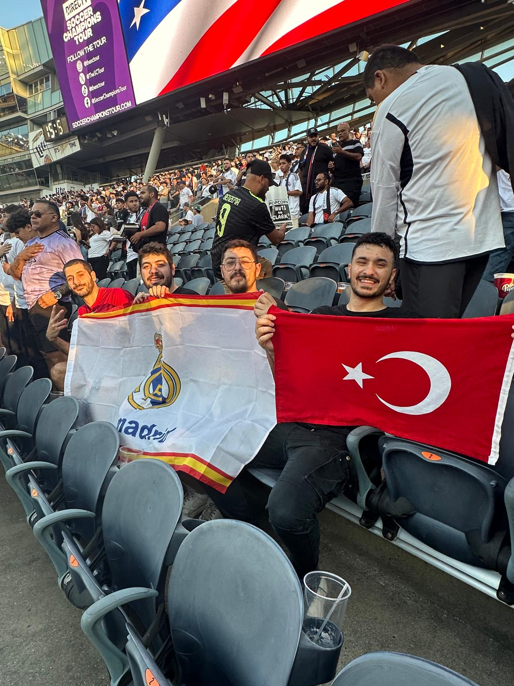
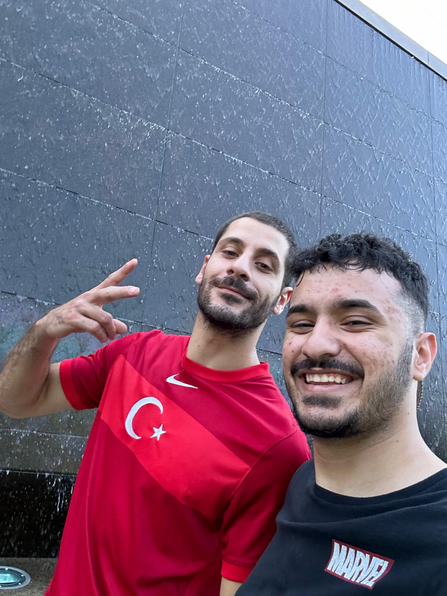
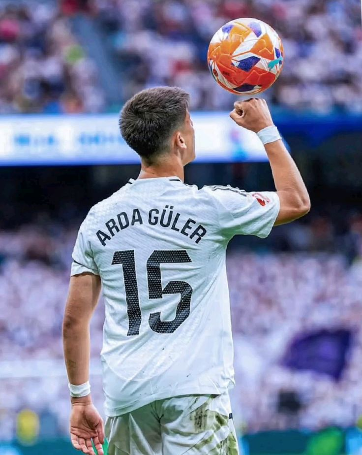
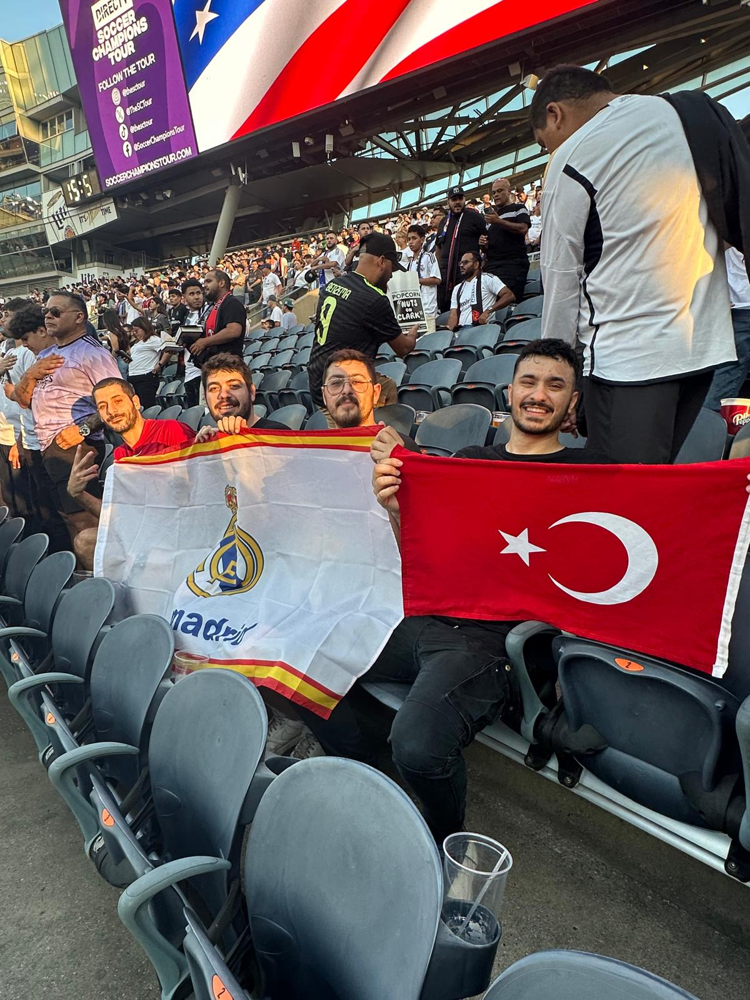
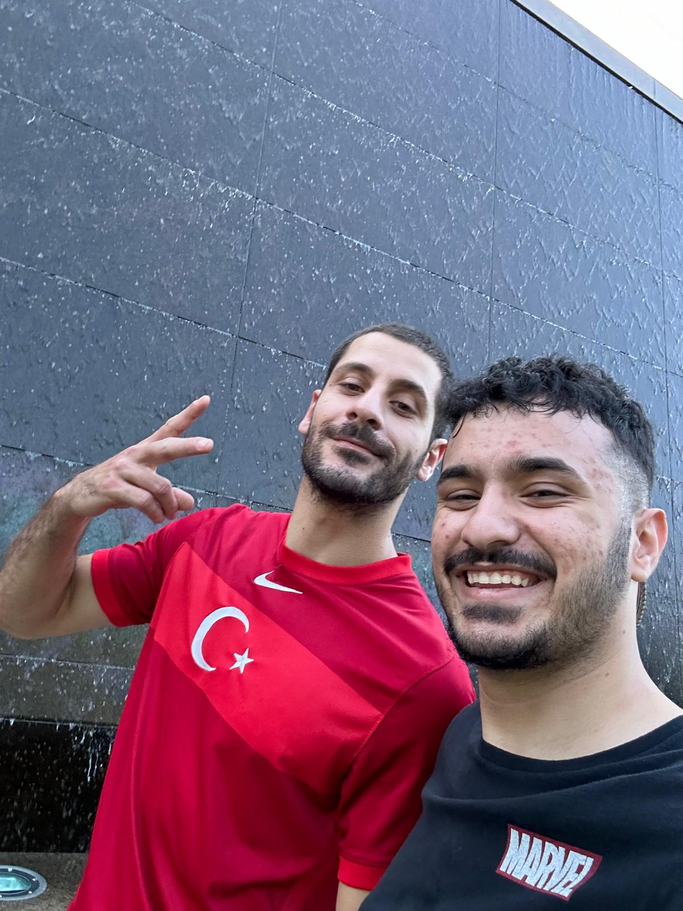
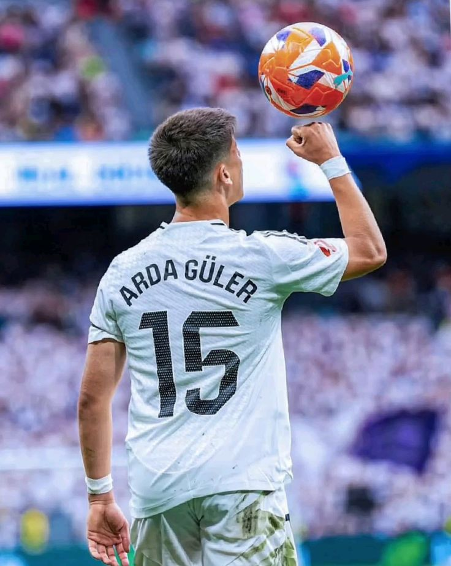

Arda Güler: From Fenerbahçe to the World Stage
As a passionate Fenerbahçe fan, I’ve been following Arda Güler since the beginning of his journey. I still remember the moment our club trusted him with the legendary number 10 jersey. Though I had doubts about whether such a young talent could carry that responsibility, Arda quickly proved that leadership and brilliance know no age.
His skills caught the eye of football giants, and it was no surprise when he chose Real Madrid. Since his transfer, I’ve watched nearly every match just to see him play — and then we heard the incredible news: Real Madrid would play against Milan in Chicago!
I was beyond excited. Not only was I going to see my favorite club, but I’d finally watch Arda Güler live. On match day, the energy was electric. The stadium was massive, and the crowd was buzzing.
I quickly picked out my favorite players: Modrić, Rüdiger, and of course, Arda. Seeing him play in the white jersey of Madrid, showcasing his skills and confidence, was an unforgettable experience. It was more than just a game — it was a moment of pride, nostalgia, and joy.